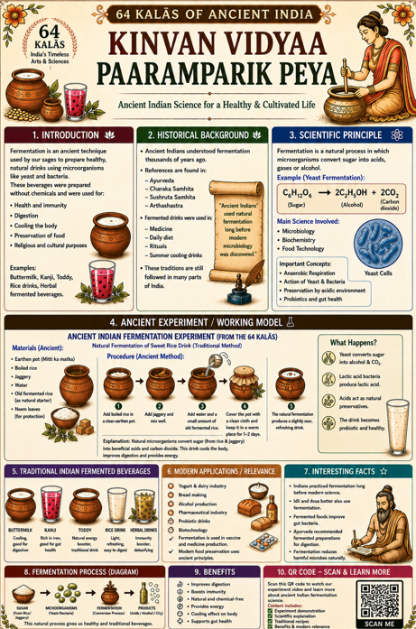

Fermentation and Traditional Beverages of Ancient India
Fermentation was used in ancient India to prepare healthy natural drinks. It helped in digestion, preservation, cooling the body, and improving gut health.
Watch Demo Video
Fermentation is an ancient technique used to prepare food and beverages using natural microorganisms. Traditional Indian drinks like buttermilk, kanji, toddy, rice drinks, and herbal fermented drinks were prepared using this method.
Ancient Indian texts such as Ayurveda, Charaka Samhita, Sushruta Samhita, and Arthashastra mention food, health, digestion, and traditional preparation practices.
Microorganisms convert sugars into acids, alcohol, and carbon dioxide. This improves taste, preservation, and probiotic value.
Fermented drinks improve digestion, support gut health, boost immunity, cool the body, and preserve food naturally.
Yeast helps convert glucose into alcohol and carbon dioxide. Lactic acid bacteria help in producing lactic acid, which gives fermented foods a sour taste and supports probiotic health.
This video shows the ingredients, mixing process, fermentation process, and final beverage.
“Ancient Indian fermentation practices combined science, health, and sustainability long before modern microbiology.”